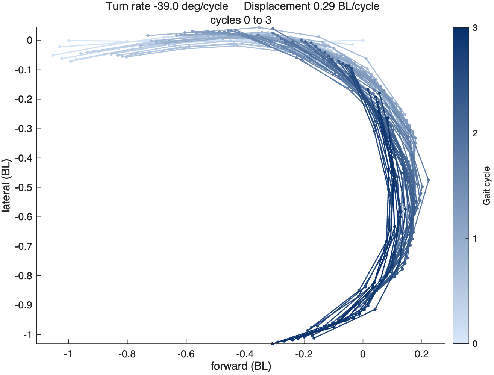
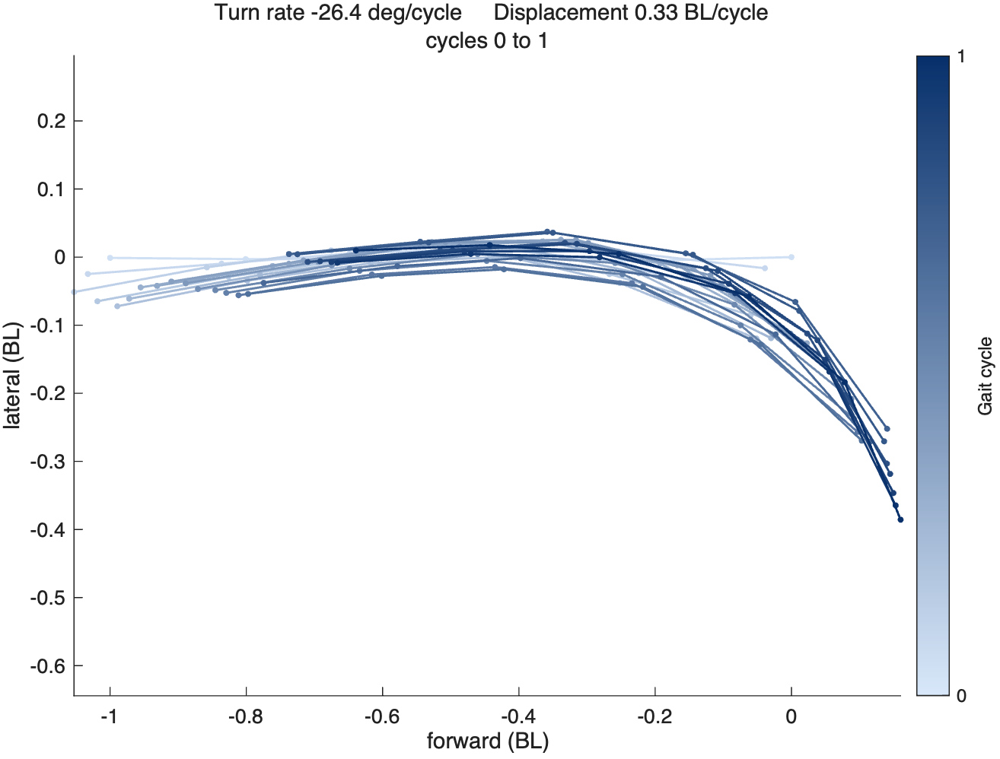
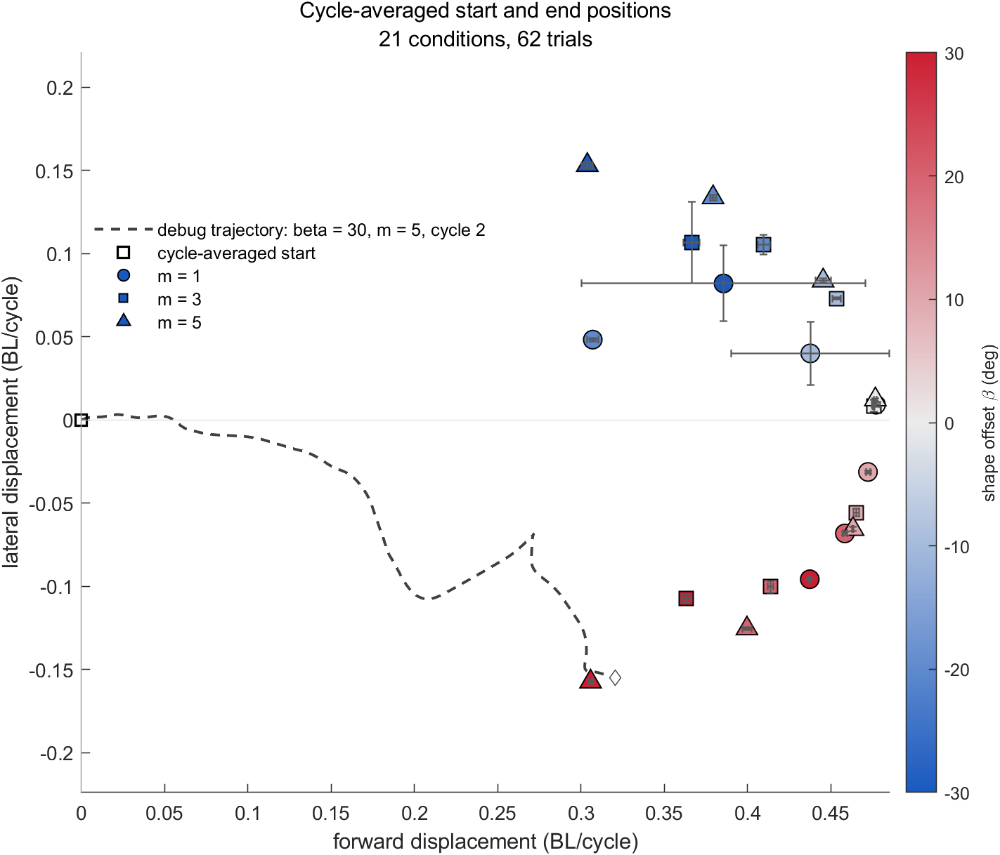

- Experimental design
- Robot testing
- Trajectory analysis
This was a smaller project carried out with Jai and Jianfeng Lin in the CRAB Lab.
In a separate project with Jai and Jianfeng Lin, I tested how SCUTL, our multi-segmented centipede robot, can steer through posture alone. A steering bias is added to the horizontal body joints, tapered with a cosine window across the front m joints so it fades out gradually along the body instead of ending abruptly. With body undulation turned off, the robot holds a fixed curved shape while its legs drive it forward, so any turning comes purely from that held shape.
We swept the bias magnitude β from -30° to +30° in 10° steps and the number of biased joints m across 1, 3, and 5, for 21 conditions with 3 trials each, to see how turning depends on both the size of the bias and how far back along the body it reaches.
The widest condition in the sweep, β = 30° applied to all five joints with a cosine taper (30, 27.1, 19.6, 10.4, 2.9° head to tail), curves the whole body rather than just the front, and turns like a fixed steering angle since there's no body wave to modulate it.


Averaging the start and end position of each condition across all 62 trials shows both parameters matter: larger bias magnitudes turn faster, and spreading the bias across more joints (larger m) increases the turn rate at a given β, confirming that both the size and reach of the postural bias shape how tightly SCUTL turns.
